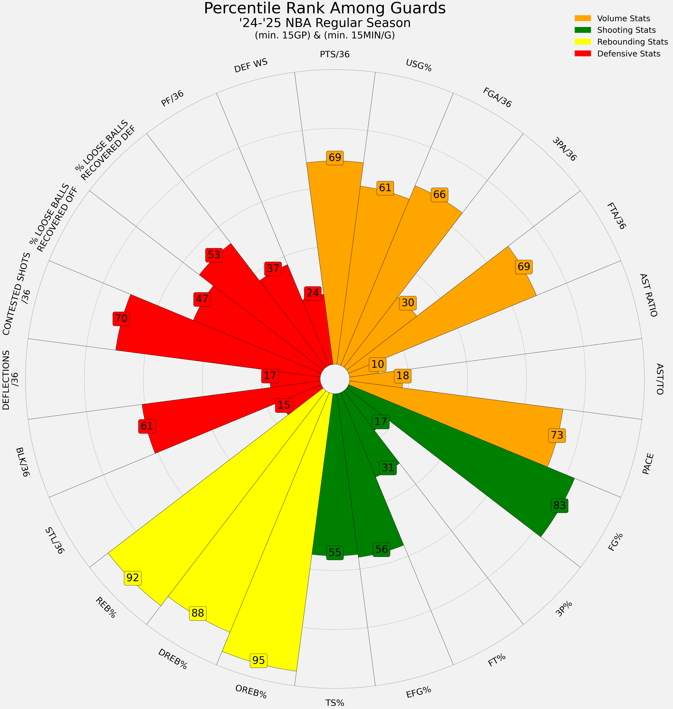
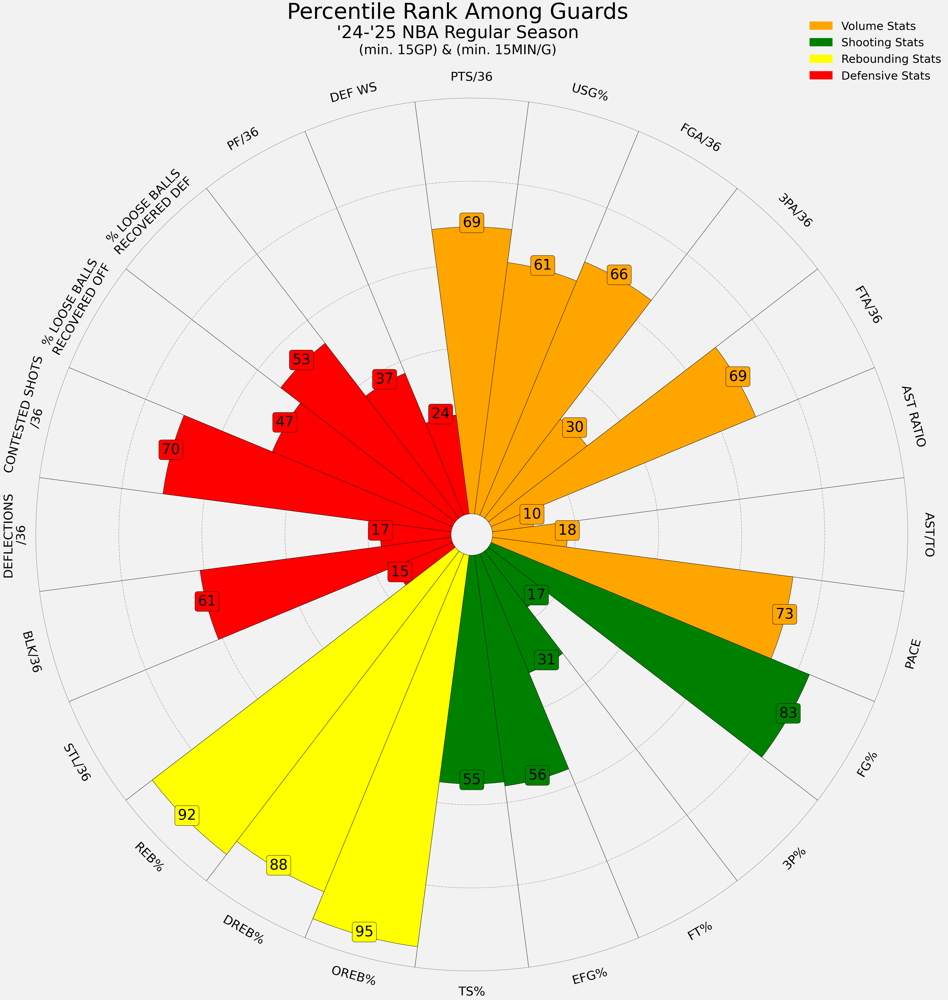

A.J. Lawson

Toronto Raptors
Position(s): SG
Age: 24
Height: 6'6"
Wingspan: 6'6"
Draft: 2021 (Undrafted)
Contract Type: Standard
(Non-Guaranteed)
Salary: $2,270,735
Exp: 2026-27 (UFA)
Profile: A.J. Lawson is a Canadian guard with the Toronto Raptors of the National Basketball Association (NBA). He is currently on a two year non-guaranteed contract with the Raptors 905 and played three seasons with the South Carolina Gamecocks. He is a score first shooting guard who averaged 14.2 PPG on 34.9% 3P% in college.
Player Profile:
High Usage Two-Level Scorer
- Primarily takes shots from three-point range or at the rim
- Draws fouls at a high rate (80th percentile in FTA/36)
- Strong rebounder for his position (80th percentile in REB%)
- Active on hustle plays (91st percentile in % LOOSE BALLS RECOVERED DEF) & (79th percentile in OREB%)
Areas of Improvement
- Rarely attempts midrange shots and struggles from that area (33% in NBA, 23% in G League)
- Poor free-throw shooter (7th percentile in FT%)
- Limited playmaking impact (8th percentile in Assist Ratio)
Video Analysis
Similar Players
Ja'Kobe Walter

Keldon Johnson
 
